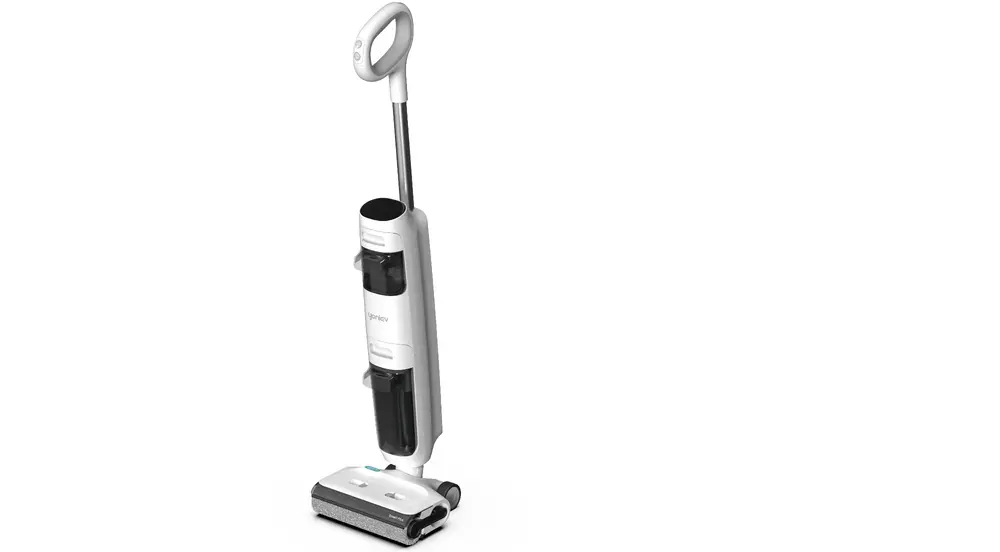
1. Teardown handle& Accessory 8
2. Teardown Assy Brush Part（Scraper water board& scraper） 9
3. Teardown Assy Brush Part（Brush roller motor,Micro switch&pump） 10
6. Teardown main body housing 12
7. Teardown PCBA,Water level sensor,Main Motor,Battery,Wire 13
History
| No | Date | Comments | Version | ISSUE | Approve |
|---|---|---|---|---|---|
| 1 | 24/04/18 | First Draft | 1.0 | Qiu | |
Tools
Electric screwdriver\Long-nose pliers\Slotted screwdriver\Zip tie\Scissors
Range of Product
| No | Product Name | Factory Serial Model | SKU | Remark |
|---|---|---|---|---|
| 1 | Yoniev U7s | CL2325 | FW260300RU | |
| 2 | GO H2O Sense | CL2221 | FW1A0100AU | |
| 3 | Yoniev U5s | CL2221 | FW213000IL | |
| 4 | GO H2O SENSE GH303 Dummy | CL2221 | FW1A0500US | |
| 5 | Yoniev U5s | CL2221 | FW210900RU | |
| 6 | Yoniev U7s | CL2221 | FW260500ID | |
| 7 | Yoniev U7s | CL2221 | FW260100TR | |
| 8 | Yoniev U7s | CL2325 | FW260700IL | |
| 9 | GO H2O Sense-GH303 | CL2325 | FW1A0200US | |
| 10 | Yoniev U5s | CL2325 | FW210600ID | |
| 11 | Yoniev U5s | CL2221 | FW210700TR | |
| 12 | GO H2O Sense-GH301 | CL2221 | FW1A0100US | |
| 13 | Yoniev U5 | CL2315F-01 | FW171200RU | |
| 14 | GO H2O-GH208 | CL2315G-03 | FW1B0300US | |
| 15 | Yoniev U5 | CL2315B-01 | FW170400TR | |
| 16 | GO H2O-GH203 | CL2315G-02 | FW1B0200US | |
| 17 | GO H2O-GH201 | CL2315G-01 | FW1B0100US | |
| 18 | Yoniev U5 | CL2315C-01 | FW170600ID | |
| 19 | Yoniev U5 | CL2315H-01 | FW171400IL | |
Range of Spare Part
| No | Spare Part Name | Remark | Photo |
|---|---|---|---|
| 1 | Brush Roller Cover | 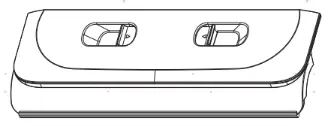 | |
| 2 | Brush Roller | 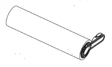 | |
| 3 | HEPA Assy | 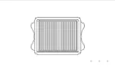 | |
| 4 | Filter | 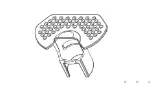 | |
| 5 | Adapter | ||
| 6 | Charging Base | Charging Dock | 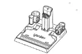 |
| 7 | Battery | 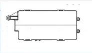 | |
| 8 | Display Screen | ||
| 9 | plastic part | Rotary union | 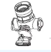 |
| 10 | Wire | 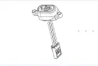 | |
| 11 | Switch | Micro Switch | 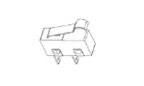 |
| 12 | Motor | Brush Roller Motor | 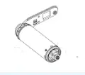 |
| 13 | Motor | Main Motor | 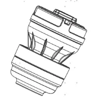 |
| 14 | PCBA | Main PCBA | 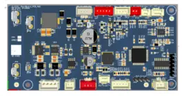 |
| 15 | Scraper | 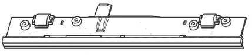 | |
| 16 | Scraper | Scraper water board | 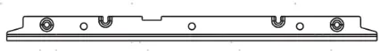 |
| 17 | Sensor | Sewage Sensor | 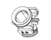 |
| 18 | Handle | 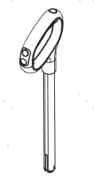 | |
| 19 | Clean Water Tank | 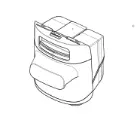 | |
| 20 | Dirt Water Tank | 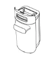 |
Wiring diagram
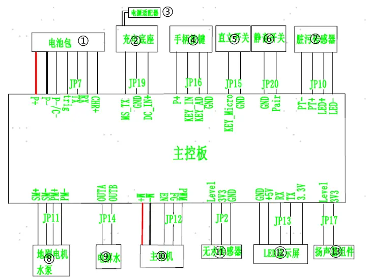
| No. | Terminal | No. | Terminal |
|---|---|---|---|
| 1 | Battery | 8 | brush roller motor & pump |
| 2 | charging base | 9 | Electrolytic water module |
| 3 | adapter | 10 | Main Motor |
| 4 | handle | 11 | water level sensor |
| 5 | micro switch | 12 | display screen |
| 6 | mute button | 13 | speaker |
| 7 | Sewage Sensor |
Tear down Guide
Teardown handle& Accessory
Disassembly all accessories and Pull the handle up after holding
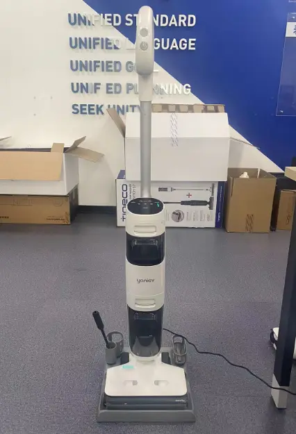
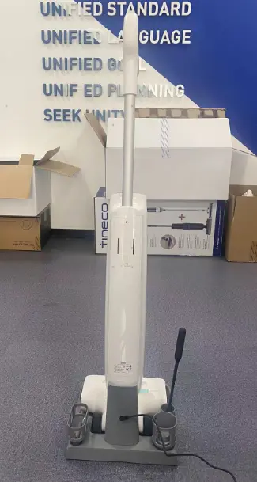
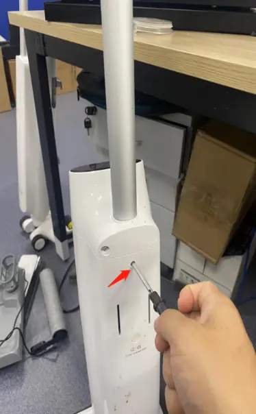
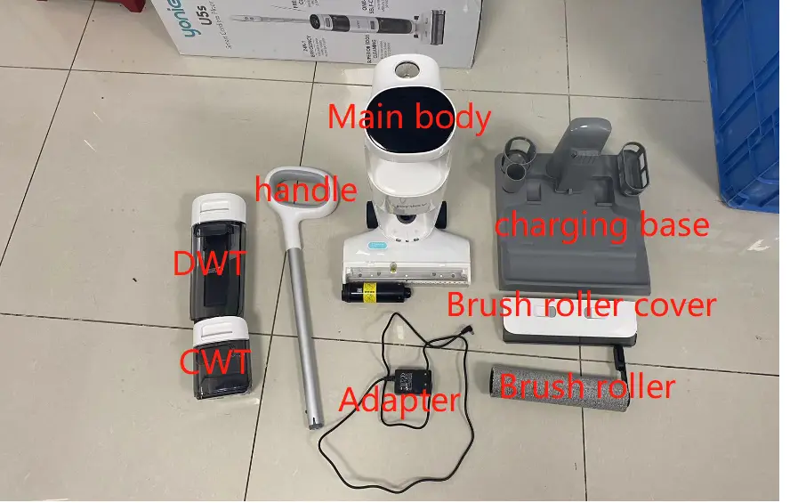
Teardown Assy Brush Part（Scraper water board& scraper）Unscrew 4pcs screws and disassembly Scraper water board
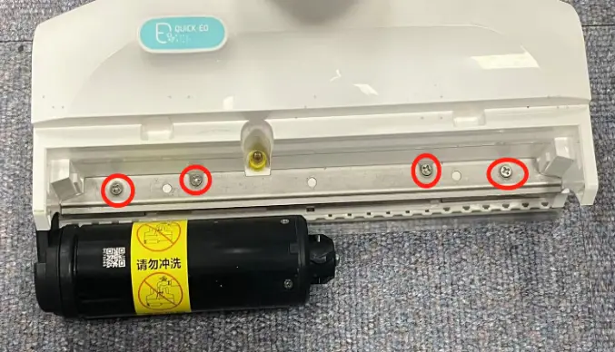
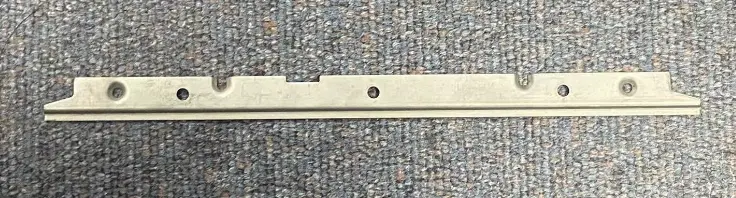
Unscrew 4pcs screws and disassembly scraper
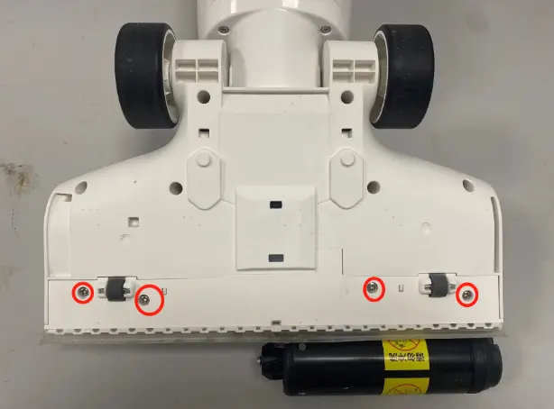
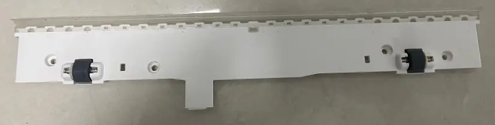
Unscrew Screws and disassembly cover
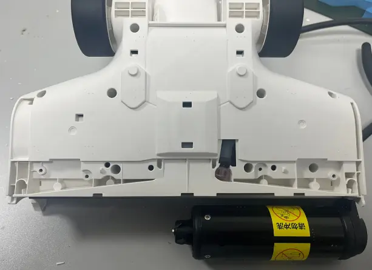
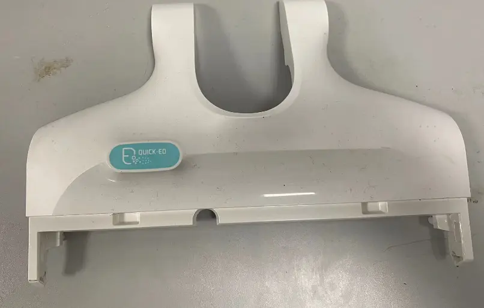
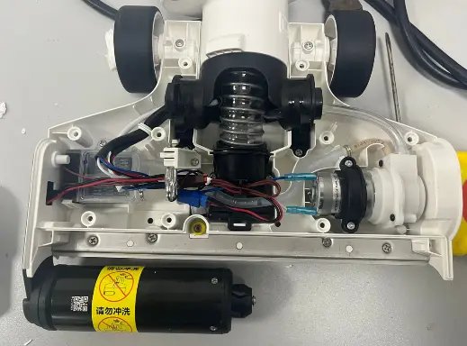
Teardown Assy Brush Part（Brush roller motor,Micro switch&pump）
Refer to the steps 2.2~2.3 to disassembly the Scraper water board& scraper
Disassembly brush roller motor deco.
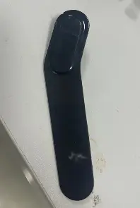
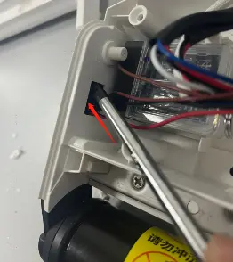
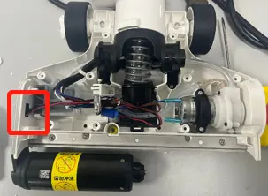
Unscrew and unplug terminal to disassembly brush roller motor
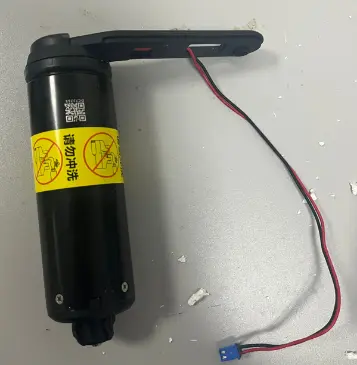
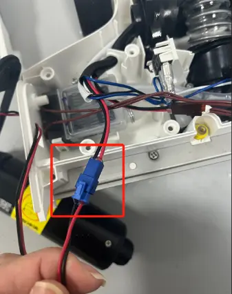
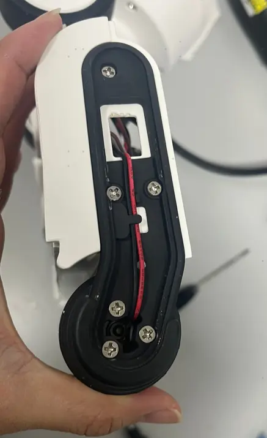
Unscrew and unplug terminal to disassembly Micro Switch
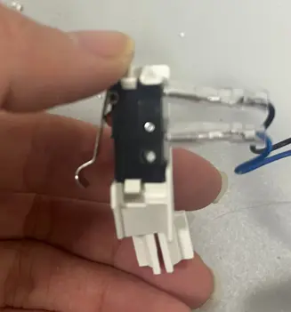
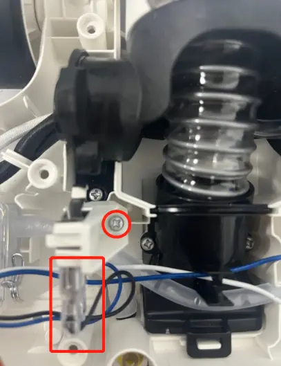
Unscrew and unplug terminal&pipe to disassembly pump
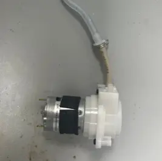
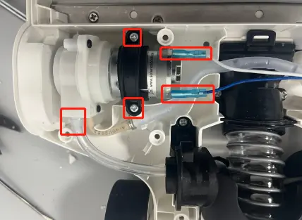
Unscrew and unplug terminal to disassembly Electrolytic water module
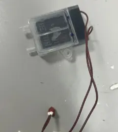
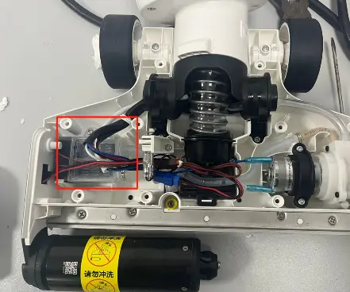
Teardown Rotary union
Refer to the steps 2.2~2.3,3.1~3.6 to disassembly the parts
Unscrew screws and disassembly Rotary union
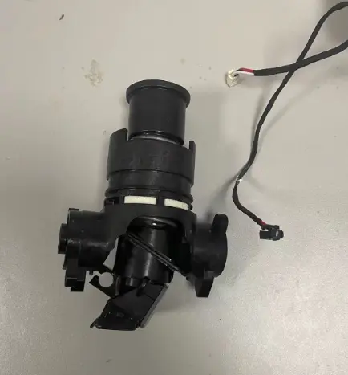
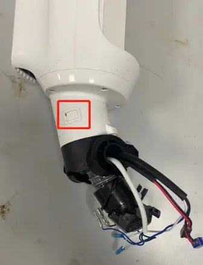
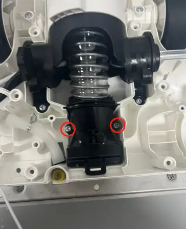
Teardown Display Screen
Disassembly Decorative Rubber and Unscrew screws
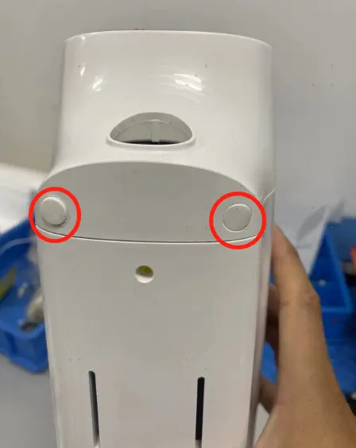
Unplug terminal,disassembly hooks to replace Display screen
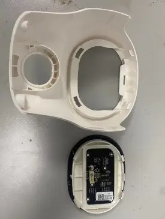
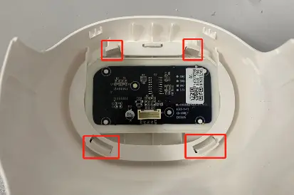
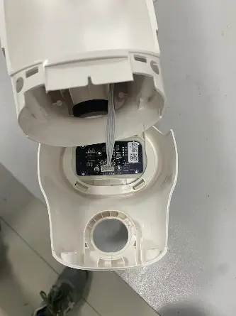
Teardown main body housing
Refer to the steps 2.2~2.3,3.1~3.6,4.0,5.0 to disassembly the parts
Unscrew screws to disassembly body housing
Teardown PCBA,Water level sensor,Main Motor,Battery,Wire
Refer to the steps 2.2~2.3,3.1~3.6,4.0,5.0,6.0 to disassembly the parts
Unscrew and disassembly PCBA cover
Unplug terminal (Noted:don’t misplug when you assembly PCBA) to disassembly PCBA
Unplug pipe to replace Water level sensor
Unscrew and disassembly Main Motor
Unscrew and disassembly Battery
Unscrew and disassembly Wire
Repair SOP
| Failure System | Failure Phenomenon | No | Failure Mode | Repair Solution | Spare Parts |
|---|---|---|---|---|---|
| Water circulation system failure | No/less spray water | 1 | CWT damage | replace CWT | CWT |
| 2 | Spray hole blocked | clean spray hole | maintenance | ||
| 3 | Pump failure | replace pump | pump | ||
| 4 | Main PCBA failure | replace Main PCBA | Main PCBA | ||
| 5 | pipe blocked | replace water pipe | water pipe | ||
| 6 | pipe bent or broken | fix or replace pipe | water pipe | ||
| 7 | water level sensor blocked | replace water level sensor | water level sensor | ||
| leaking water | 8 | Debris channel /Air duct blocked | 1.Clean the debris channel blockage、debris wrapped around the brush roller 、suction nozzle blockage; 2.Dry and clean HEPA; 3.Empty and clean the DWT | maintenance | |
| 9 | HEPA damage | replace HEPA | HEPA | ||
| 10 | CWT damage | replace CWT | CWT | ||
| 11 | DWT damage | replace DWT | DWT | ||
| 12 | brush cover damaged | replace brush cover | brush roller cover | ||
| 13 | pump failure | replace pump | pump | ||
| 14 | water level sensor failure | replace water level sensor | water level sensor | ||
| 15 | water pipe loose | Re-plug water pipe | water pipe | ||
| 16 | water pipe damage | replace water pipe | water pipe | ||
| 17 | Sewage recovery pipe damaged | replace sewage recovery pipe | Rotary union | ||
| no suck up water | 18 | Debris channel /Air duct blocked | 1.Clean the debris channel blockage、debris wrapped around the brush roller 、suction nozzle blockage; 2.Dry and clean HEPA; 3.Empty and clean the DWT | maintenance | |
| 19 | HEPA not install properly | reinstall HEPA properly | maintenance | ||
| 20 | brush roller damage | replace brush roller | brush roller | ||
| 21 | Sewage recovery pipe damaged | replace sewage recovery pipe | Rotary union | ||
| 22 | motor failure | replace main motor | main motor | ||
| 23 | brush motor failure | replace brush roller motor | brush roller motor | ||
| charging system failure | No response when charging | 24 | adapter failure | replace adapter | adapter |
| 25 | charging base poor contact | replace charging base | charging base | ||
| 26 | main body wire damage | replace body wire | wire | ||
| 27 | battery pack failure | replace battery pack | battery pack | ||
| 28 | Main PCBA failure | replace main PCBA | main PCBA | ||
| 29 | display screen failure | replace display screen | display screen | ||
| Battery level indicator flashes several times and then goes off, then the machine stop charging | 30 | adapter failure | replace adapter | adapter | |
| 31 | battery pack failure | replace battery pack | battery pack | ||
| battery level under 100% and the indicator unable To Increase | 32 | adapter failure | replace adapter | adapter | |
| 33 | battery pack failure | replace battery pack | battery pack | ||
| battery level drop when in charging | 34 | adapter failure | replace adapter | adapter | |
| 35 | battery pack failure | replace battery pack | battery pack | ||
| charging system failure | Poor charging contact（shake to charge） | 36 | Charging Pin rusted | replace charging base | charging base |
| 37 | Poor contact of the charging contact pin | replace charging base | charging base | ||
| 38 | repair charging cosmetic damage | replace charging base | charging base | ||
| 39 | charging base cosmetic damage | replace charging base | charging base | ||
| 40 | wire cosmetic damage | replace wire | Wire | ||
| 41 | Rotary union worn or cosmetic damage | replace Rotary union | Rotary union | ||
| abnormal noise when in charging | 42 | adapter failure | replace adapter | adapter | |
| 43 | Main PCBA failure | replace main PCBA | main PCBA | ||
| 44 | battery pack failure | replace battery pack | battery pack | ||
| burn smell in main body when in charging | 45 | Main PCBA failure | replace main PCBA | main PCBA | |
| 46 | battery pack failure | replace battery pack | battery pack | ||
| Burning smell when in charging | 47 | adapter failure | replace adapter | adapter | |
| 48 | battery pack failure | replace battery pack | battery pack | ||
Turn on failure
| turn on but no reaction , screen not light up, also no reaction when charging | 49 | handle failure | replace handle | handle |
| 50 | battery pack failure | replace battery pack | battery pack | ||
| 51 | Main PCBA failure | replace main PCBA | main PCBA | ||
| After pressing the power button, the display lights up, but it doesn't work after releasing the micro switch. | 52 | Micro switch failure | replace Micro switch failure | Micro switch | |
| 53 | Motor failure | replace motor | motor | ||
| 54 | Main PCBA failure | replace main PCBA | main PCBA | ||
| stop running after several times max bar blinking | 55 | motor failure | replace motor | motor | |
| stop running after several times and DWT indicator alarm | 56 | DWT full | Empty/clean the DWT | maintenance | |
| 57 | DWT pin rusted | Rinse and clean the DWT top cover, bottom cover and sensor pin,and dry off | maintenance | ||
| 58 | DWT failure | replace DWT | DWT | ||
| 59 | PCBA failure | Problem solved by replaced PCBA | PCBA | ||
| stop running after several times brush roller indicator alarm | 60 | brush roller is blocked | clean brush roller | maintenance | |
| 61 | brush roller heavy wear | replace brush roller | brush roller | ||
| 62 | brush roller motor failure | replace brush roller motor | brush roller motor | ||
| 63 | Main PCBA failure | replace main PCBA | main PCBA | ||
| stop running after several times screen dies out | 64 | handle failure | replace handle | handle | |
| 65 | Main PCBA failure | replace main PCBA | main PCBA | ||
| 66 | battery pack failure | replace battery pack | battery pack | ||
| mode switch failure | switch mode but no reaction | 67 | handle failure | replace handle | handle |
| 68 | Main PCBA failure | replace main PCBA | main PCBA | ||
| 69 | handle failure | replace handle | handle | ||
| switch mode but auto power-off | 70 | Main PCBA failure | replace main PCBA | main PCBA | |
| 71 | battery pack failure | replace battery pack | battery pack | ||
| 72 | motor failure | replace motor | motor | ||
| False alarm | stop running have nothing alarm | 73 | battery pack failure | replace battery pack | battery pack |
| DWT water is full but no alarm/Water is not full but still alarm | 74 | DWT full | Empty/clean the DWT | maintenance | |
| 75 | DWT failure | replace DWT | DWT | ||
| 76 | Main Motor failure | Replace main motor | Main Motor | ||
| 77 | PCBA failure | Problem solved by replaced PCBA | PCBA | ||
| CWT have enough water but still alarm, and no water spray out from outlet. | 78 | CWT failure | replace CWT | CWT | |
| 79 | spray hole blocked | clean spray hole | maintenance | ||
| 80 | Impurities are blocking the water outlet valve under the CWT | Clean the impurities on the valve | Maintenance | ||
| 81 | pump failure | replace pump | pump | ||
| False alarm | 82 | pipe blocked | replace water pipe | water pipe | |
| 83 | pipe bent or broken | fix or replace pipe | water pipe | ||
| 84 | water level sensor blocked | replace water level sensor | water level sensor | ||
| 85 | main PCBA failure | replace main pcba | main pcba | ||
| CWT have enough water but still alarm, and the machine spraying water normally | 86 | The Water level sensor has air bubbles inside | It tested okay after being turned up to the maximum setting for 30s | NFF | |
| 87 | Impurities are blocking the water outlet valve under the CWT | Clean the impurities on the valve | Maintenance | ||
| 88 | water level sensor failure | replace water level sensor | water level sensor | ||
| 89 | main PCBA failure | replace main PCBA | main PCBA | ||
| CWT have no water but not alarm | 90 | The Water level sensor has water remind inside | It tested okay after being turned up to the maximum setting for 30s | NFF | |
| 91 | Impurities are blocking the water outlet valve under the CWT | Clean the impurities on the valve | Maintenance | ||
| 92 | water level sensor failure | replace water level sensor | water level sensor | ||
| 93 | Water pipe in front of the water level sensor blocked | replace water pipe | water pipe | ||
| 94 | main PCBA failure | replace main PCBA | main PCBA | ||
| iloop ring always blue when suck nothing dirty | 95 | Debris channel /Air duct blocked | 1.Clean the debris channel blockage、debris wrapped around the brush roller 、suction nozzle blockage; 2.Dry and clean HEPA; 3.Empty and clean the DWT | maintenance | |
| 96 | Sewage Sensor failure | replace Sewage Sensor | Sewage Sensor | ||
| 97 | Main PCBA failure | replace main PCBA | main PCBA | ||
| 98 | display screen failure | replace display screen | display screen | ||
| screen display malfunction | screen not reaction/display incomplete/display blinking | 99 | display screen failure | replace display screen | display screen |
| 100 | Main PCBA failure | replace main PCBA | main PCBA | ||
| iloop ring not change | 101 | Main PCBA failure | replace main PCBA | main PCBA | |
| 102 | display screen failure | replace display screen | display screen | ||
| 103 | Sewage Sensor failure | replace Sewage Sensor | Sewage Sensor | ||
| abnormal noise | motor noise | 104 | motor failure | replace main motor | main motor |
| Noise comes from main body, but not from the motor | 105 | HEPA failure | Replace HEPA | HEPA | |
| brush noise | 106 | Brush roller blocked by debris | Clean the debris channel blockage、debris wrapped around the brush roller 、suction nozzle blockage; | maintenance | |
| 107 | scraper has dirt buildup | clean the scraper | maintenance | ||
| 108 | brush roller heavy wear | replace brush roller | brush roller | ||
| 109 | The small wheel noisy | replace the repair wheel | repair wheel | ||
| 110 | Scraper broken | replace scraper | scraper | ||
| pump noise | 111 | pump noise | replace pump | pump | |
| Rotary union noise | 112 | Rotary union failure | replace Rotary union | Rotary union | |
| Self-cleaning malfunction | press the self-cleaning button,Voice Prompt“Please place appliance on charging dock,and the self-cleaning function not start | 113 | adapter failure | replace adapter | adapter |
| 114 | Poor charging contact | replace charging base | charging base | ||
| 115 | charging base wire failure | replace charging base | charging base | ||
| 116 | Main body charging wire failure | replace wire | wire | ||
| 117 | battery pack failure | replace battery pack | battery pack | ||
| 118 | Main PCBA failure | replace main PCBA | main PCBA | ||
| 119 | Rotary union cosmetic damage | replace Rotary union | Rotary union | ||
| stop running in self-cleaning process, and the screen turned off | 120 | adapter failure | replace adapter | adapter | |
| 121 | charging base failure | replace charging base | charging base | ||
| 122 | charging base poor contact | replace charging base | charging base | ||
| 123 | Main body charging wire failure | replace wire | wire | ||
| 124 | Rotary union cosmetic damage | replace Rotary union | Rotary union | ||
| stop running in self-cleaning process, and the DWT false alarm | 125 | DWT full | Empty/clean the DWT | maintenance | |
| 126 | DWT failure | replace DWT | DWT | ||
| 127 | Motor failure | Replace main motor | Main motor | ||
| 128 | PCBA failure | Problem solved by replaced PCBA | PCBA | ||
| stop running in self-cleaning process, and the CWT false alarm | 129 | CWT empty | Filled the CWT | NFF | |
| 130 | The Water level sensor has air bubbles inside | It tested okay after being turned up to the maximum setting for 30s | NFF | ||
| 131 | Impurities are blocking the water outlet valve under the CWT | Clean the impurities on the valve | Maintenance | ||
| 132 | water level sensor failure | replace water level sensor | water level sensor | ||
| 133 | main PCBA failure | replace main PCBA | main PCBA | ||
| press the self-cleaning button but no reaction | 134 | handle failure | replace handle | handle | |
| 135 | Battery failure | replace battery | battery | ||
| 136 | Main PCBA failure | replace main PCBA | main PCBA | ||
| self-cleaning cannot stop | 137 | Main PCBA failure | replace main PCBA | main PCBA | |
| Reminds water on charging base after self cleaning function | 138 | Debris channel /Air duct blocked | 1.Clean the debris channel blockage、debris wrapped around the brush roller 、suction nozzle blockage; 2.Dry and clean HEPA; 3.Empty and clean the DWT | maintenance | |
| 139 | HEPA not install properly | reinstall HEPA properly | maintenance | ||
| 140 | Debris pipe damage | Replace Rotary union | Rotary union | ||
| 141 | brush roller heavy wear | replace brush roller | brush roller | ||
| 142 | water pipe damage | replace water pipe | water pipe | ||
| 143 | motor failure | replace main motor | main motor | ||
| 144 | Main PCBA failure | replace main PCBA | main PCBA | ||
| after finish self-cleaning program still remind “Please begin self-cleaning cycle” | 145 | Main PCBA failure | replace main PCBA | main PCBA | |
| Brush roller not spinning | Brush roller stop spinning, and the machine alarm brush abnormal | 146 | brush roller is blocked | clean brush roller | maintenance |
| 147 | brush roller heavy wear | replace brush roller | brush roller | ||
| 148 | brush roller motor failure | replace brush roller motor | brush roller motor | ||
| 149 | Main PCBA failure | replace main PCBA | main PCBA | ||
| Brush roller not spinning with no alarm | 150 | brush roller motor failure | replace brush roller motor | brush roller motor | |
| 151 | Main PCBA failure | replace main PCBA | main PCBA |